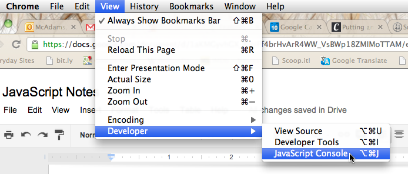
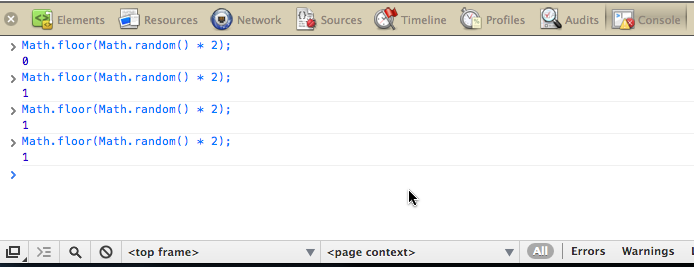
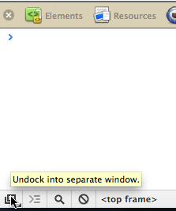
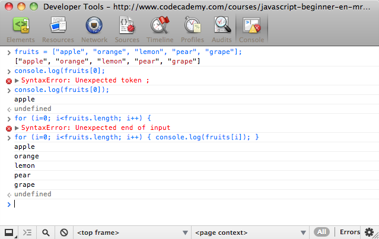

You can easily test short pieces of JavaScript in the console if you are using the Chrome Web browser.
1. In the Google Chrome browser, open the JavaScript Console.
2. You'll see the console at the bottom of the current page. The console gives you a command line so you can test short pieces of code to see what they do.
3. If you want to use the console as a stand-alone window, undock it with the button in the lower left corner.
4. You can keep the window open for quick access while you're learning JavaScript.
